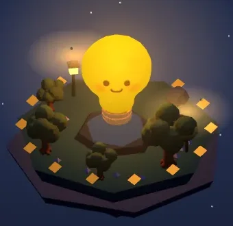
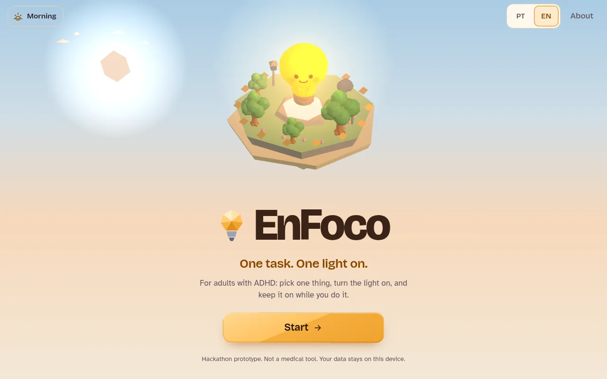
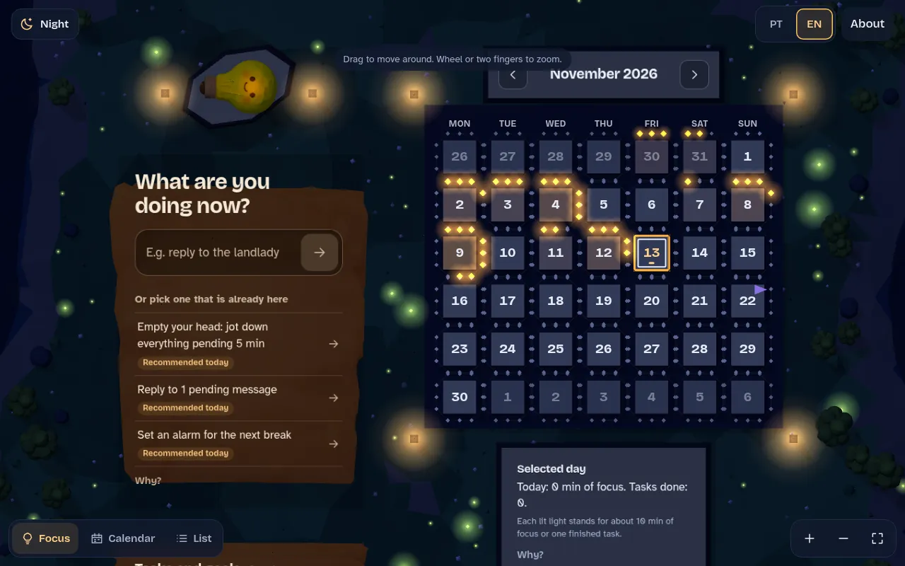
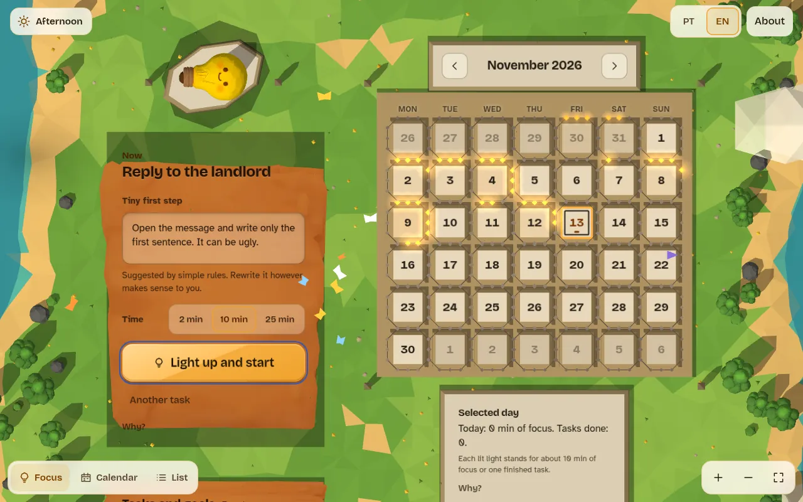
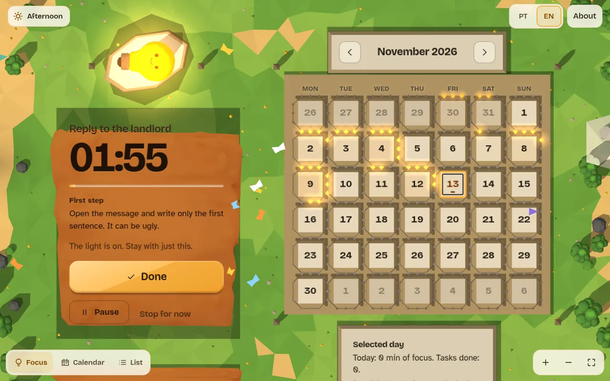
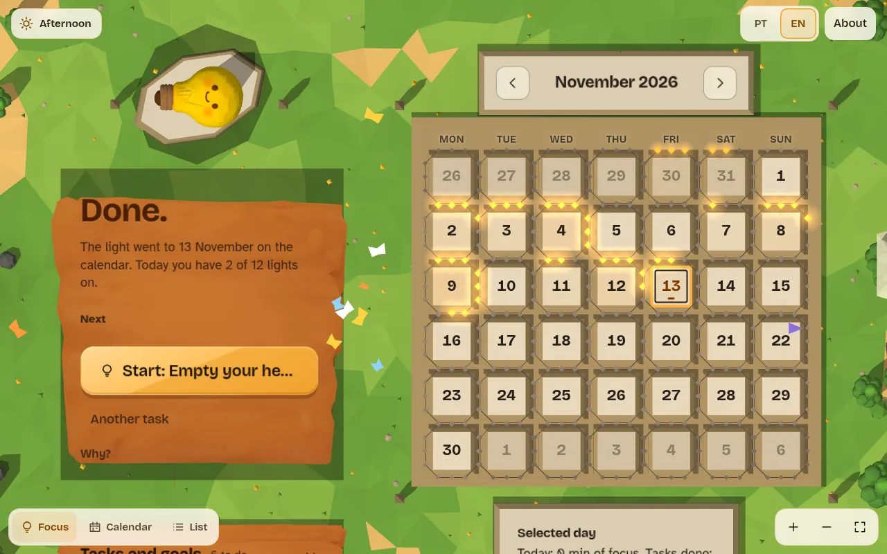
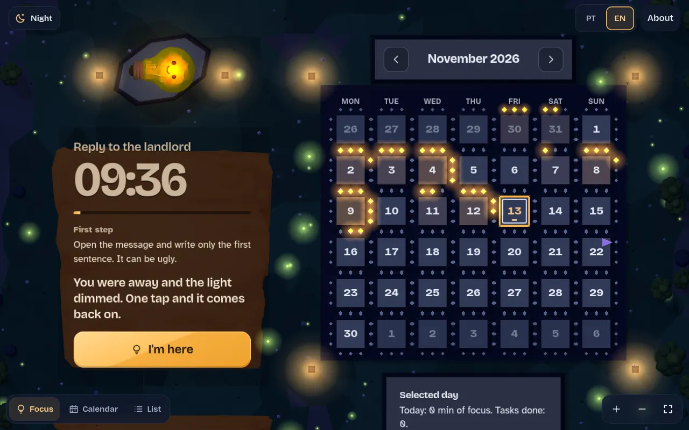
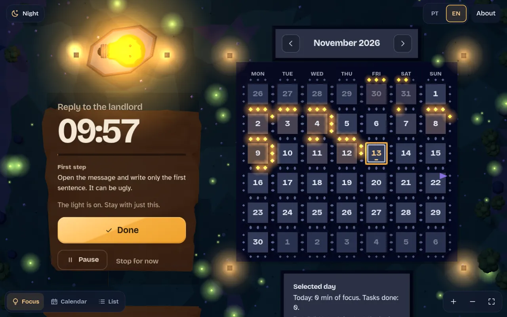

Pitch deck · Portugal Tech Week · Hackathon for a Cause
EnFoco
One task. One light on.
A focus web app for adults with ADHD. Pick one thing, take a tiny first step, turn the light on, and keep it on while you do it. No streaks, no guilt, no data leaving your device.

2The problem
Knowing what to do isn't the hard part.
Starting, and staying, is.
Executive function
Barkley describes ADHD as a problem of behavioural inhibition and the executive functions it supports: working memory, self-regulation, getting started.
Time is felt, not seen
Time is hard to feel and to steer toward. Interviewees plan for rare hyperfocus days and feel little urgency until the deadline is on top of them.
Shame, not laziness
In interviews with adults with ADHD, initiation block is central. When a plan breaks they describe shame and self-blame, and they reject tools that feel like surveillance.
What most productivity tools add instead
Longer lists → a wall of overdue items.
Streaks → one blank day erases the rest.
Tracking → the feeling of being watched and judged.
Our design reading of the sources above. NICE NG87 recommends structure in daily life and environmental changes, such as shorter focus periods with movement breaks. NICE NG87
3The solution
One task now.
One light on while you do it.
EnFoco does one thing: it helps a person start one task and stay with it. Everything else was cut. Version 3 had about twenty features. Version 4 kept only what serves "start, and stay".
One thing at a time
The screen asks only: what are you doing now?
A tiny first step
Suggested from your words, always editable.
A light, not a judge
If you drift, the light dims. One tap brings it back.
Private by default
Everything stays in your browser. No account.

4How it works · the demo
Type, Enter, Enter. The light is on.

1
Pick one task
Write it, or tap one of the first three. Today's recommended tasks rotate daily.

2
Tiny first step
"Open the message and write only the first sentence. It can be ugly." Choose 2, 10 or 25 min.

3
The light stays on
A big, plain timer. Foquito glows while you work. Pause or stop any time.

4
Done: light to today
The light flies to today on the calendar. The next task is one tap away.
Screens from the live app in English. Sample list and history are made-up demo data. Live: enfoco-app.vercel.app

5No guilt by design
A light that dims.
Never a red alert.
The drift nudge
Tab hidden for 15 s, or 4 min without a touch: Foquito dims and asks for one tap. Nothing is counted as a failure, and session time still counts.
Lights, not streaks
Each day earns a light per 10 min of focus started and per task done, up to twelve. A blank day erases nothing. Nothing is ever "overdue".
Local only
One localStorage object. No account, server or analytics. Export and delete are one tap in "About".
6Why it should work · the evidence behind each choice
Every feature has a "Why?" with its sources, inside the app.
| Design choice | Source | What it supports |
|---|---|---|
| One task on screen | Barkley 1997; Chen et al. 2026 | Lower load on executive functions. Initiation block is central. |
| Tiny first step | Gollwitzer 1999; Safren et al. 2010, JAMA | Concrete if-then plans help people start. CBT for adult ADHD breaks tasks into steps. |
| 2 / 10 / 25 min, timer in view | Barkley 1997; NICE NG87; ADHD-EU guide 2024 | Make time visible. Shorter focus periods with breaks. |
| Dims without guilt | Chen et al. 2026 | People describe shame when plans fail and reject surveillance. |
| Lights, no streaks | Chen et al. 2026 | Progress markers that survive blank days. |
| Recommended tasks of the day | NICE NG87; Yang et al. 2025, JOGH | Structure in daily activities. A meta-analysis links acute exercise to a small effect on inhibitory control in adults with ADHD. |
Honest caveat: these sources informed the design. None of them evaluates EnFoco. Chen, Meng & Nie is a preprint. EnFoco is not a treatment.
7What's built today · live, not a mock-up
A working prototype, v1 → v6 in one hackathon.
The core loop
- One task now, from text or list
- Tiny first step from keyword rules, editable
- 2 / 10 / 25 min timer, pause, stop, +more
- Drift nudge: dims, one tap back
- Light flies to today's date
Around it
- Calendar of lights, no streaks
- Task list and goals with date flags
- Recommended tasks of the day, rotating
- "Why?" notes with 8 linked sources
- Optional 36 s breathing pause
Care and craft
- Portuguese and English UI
- Morning, afternoon, night scenes by clock
- Keyboard use, 44 px targets, reduced motion
- Export and delete everything
- Works without WebGL (HTML + SVG view)
8Tech · Three.js + Tripo AI 3D
A whole world in one HTML file.
- No build step. One ~180 KB
index.html: HTML, CSS and one module. Static hosting on Vercel and GitHub Pages. - Three.js 0.160 via import map and dynamic
import(), so a CDN failure never breaks the loop. - Tripo AI models (GLB, ~155–176 KB each): Foquito, tree, wooden board, rock. Normalised at load, re-tinted per phase, 8 s timeout, code-built fallback.
- One canvas, two scenes: island and isometric calendar map. InstancedMesh, one point light, pixel ratio ≤ 1.5, ~30 fps.
- State: one localStorage object. No backend.

The four Tripo GLBs the app loads, rendered live here with Three.js
9Vision, Limits & Next Steps · 1 of 3 · Vision
A calm light for every start.
Any adult with ADHD, on any device and in their language, can start the next small thing in under a minute, without shame, surveillance or giving away their data.
Today · v6
Prototype
- Full loop works end to end
- Each choice linked to sources
- Local-only, PT + EN
Months 0–3
Validate
- Co-design and testing with adults with ADHD, via Brainstorm
- Tune the nudge from real sessions
- Harden: reload-safe timer, real devices
Months 3–9
Everyday tool
- Installable offline PWA
- Opt-in, end-to-end encrypted sync
- Spanish added to PT + EN
- Opt-in AI first step, always editable
Months 9–18
Evidence & reach
- Pre-registered pilot with clinical / academic partners
- Person-controlled export for clinicians
- ADHD associations in Europe and Latin America
10Vision, Limits & Next Steps · 2 of 3 · Limits
What EnFoco is not, yet.
01Not validated
Not yet tested with a single person with ADHD. The sources inform the design; none evaluates EnFoco.
→ Usability round, weeks 2–6
02Not a treatment
It does not diagnose, treat or replace professional support. It is not a medical device.
→ Clinical advisors before any claim
03Hackathon architecture
One ~180 KB HTML file, no automated tests, no build. Fast to iterate, hard to scale.
→ Modules + tests in Phase 1
04Local-only data
localStorage only: no sync or backup between devices. Clearing the browser loses history (export exists).
→ Opt-in encrypted sync, Phase 2
05Simple heuristics
First step comes from keyword rules, not AI. The nudge only sees tab visibility and touches. 15 s / 4 min are our guesses. A running timer is lost on reload.
→ Tune from data; persist timer
06Devices, language, polish
Tested only in Chrome with software rendering, not on low-end phones. UI in PT + EN only. At night the Tripo boards stay warmer than the scene (simple colour-ratio tint). Needs CDN for 3D and fonts.
→ Device lab, Spanish, night tint fix
11Vision, Limits & Next Steps · 3 of 3 · Next steps
Next 12 months, with a metric for each step.
| When | Step | Success metric (target) |
|---|---|---|
| Wk 1–2 | Harden. Reload-safe timer, night tint fix, test on 3+ low-end Android phones and an iPhone. | ≥ 30 fps or auto-fallback on every device; 0 sessions lost on reload |
| Wk 2–6 | Usability round 1 with 5–8 adults with ADHD via Brainstorm, with consent, think-aloud. | ≥ 80% light up within 60 s of opening; SUS ≥ 70; all resume after a dim unaided |
| Wk 6–10 | Tune and cut. Set nudge thresholds from opt-in local logs; bring back cut v3 features only if testers ask. | Fewer false dims than round 1; no new step before "start" |
| Mo 3–6 | Everyday tool. PWA + offline, Spanish UI, opt-in E2E sync, WCAG 2.2 AA audit, code split into modules + tests. | Installable; 0 critical a11y issues; ≥ 40% of field testers return in week 2 |
| Mo 6–12 | Pilot protocol with a clinical / academic partner, ethics review, pre-registration. | Protocol registered; outcomes: task initiation and time on task |
Two north-star metrics
Start
sessions lit ÷ app opens
Stay
sessions finished or resumed after a dim ÷ sessions lit
Computed on the device; shared only with consent.
What we need
- Brainstorm's community for testing
- Clinicians and researchers as advisors
- A range of real devices to test on
All numbers on this slide are targets, not results.
12Thank you
One task.
One light on.
We want the light on to be the only goal on the screen, and we'll only add what people with ADHD show us they need.
Leonardo Cagliero
Founder of EnFoco. Founder of Cosmos Pay, AI professor at UCASAL, Tripo Ace partner.
Hackathon prototype for Portugal Tech Week, Hackathon for a Cause, with Brainstorm. Built at the hackathon with Sofía Vázquez Furriel. Not a medical tool.